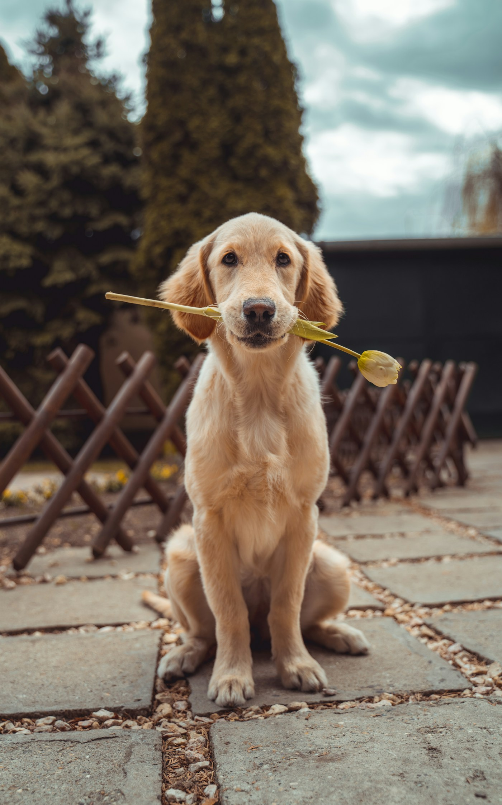

Найдите своего
Посмотрите фотографии и истории. Подумайте, чей ритм жизни близок вашему.
У большой дружбы четыре лапы
Иногда, чтобы изменить целую жизнь, достаточно открыть дверь. Познакомьтесь с теми, кто мог бы стать вашим лучшим другом.
Не идеальная порода.
Ваше особенное совпадение.

Давайте знакомиться
Шесть разных характеров.
И столько поводов улыбнуться.
В нашем маленьком каталоге всего шесть героев. Попробуйте выбрать другой характер или размер.
Маленькие шаги к большой дружбе
Так мог бы выглядеть путь
к встрече на настоящей платформе.
Посмотрите фотографии и истории. Подумайте, чей ритм жизни близок вашему.
Откройте учебную форму в анкете. Используйте вымышленные данные, чтобы попробовать сценарий.
В реальном сервисе здесь был бы разговор с куратором. В нашем концепте сценарий заканчивается демоэкраном.
Идея, в которой есть тепло
«Лапа надежды» — проект для портфолио о том, как дизайн может помочь людям замечать животных и осознанно выбирать друга.
Это вымышленная платформа, а не действующий приют. Имена, возраст и истории придуманы; фотографии используются как иллюстрации. Здесь нет сбора денег, реального пристройства или отправки заявок.
Подробнее о концептеНет. Все анкеты вымышленные и созданы для демонстрации интерфейса. Собаки на фотографиях не предлагаются к пристройству через этот сайт.
Никуда. Форма проверяет поля и показывает учебный результат только в вашем браузере. Введённые данные не отправляются и не сохраняются. Для проверки используйте вымышленные имя и email.
Обратитесь в проверенный приют в вашем городе и уточните, какая помощь нужна сейчас: прогулки, корм, перевозка или временный дом. У этого концепта нет партнёрских приютов и платёжных реквизитов.